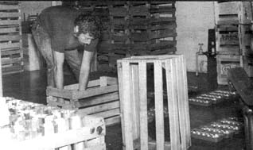
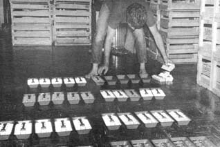
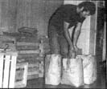
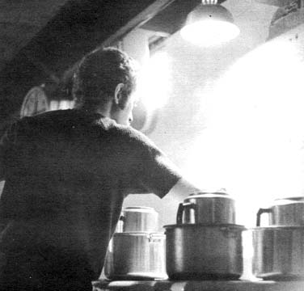
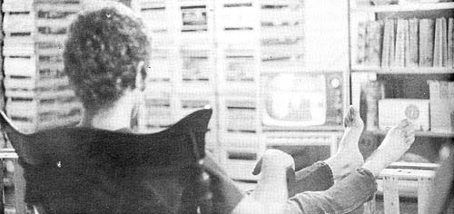
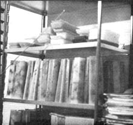

Dennis Murphy - a young man in Rochester, Michigan - has proven to my satisfaction that even the cold, hard world of business will soften and thaw for the individual whose heart is pure.
Dennis, you see, has a little home enterprise he conducts from his basement and the venture allows him to create a product that he enjoys and believes in. Furthermore, Dennis has found he can gladden customers' hearts by offering them his product at one-third the price they expect to pay. The customers, in turn, are grateful for the opportunity to buy . . . and they do. And that allows Denny to hire his friends at very good wages for work they find pleasurable which, of course, gladdens their hearts.
And is Dennis rewarded for spreading all this Good Karma? You bet he is! For Dennis Murphy can gross one thousand dollars a day with his little home business. Of course, it sometimes takes him a whole week to prepare for that one big day . . . and you must realize that Denny only gets $850 out of the thousand.
Still and all, I think you'll admit that young Dennis Murphy is doing very well.
As a matter of fact, Denny is doing so well that he doesn't even bother to work every week. In his words, "It's not the business of business, it's the business of living that interests me."
Of course, the path to such perfect attainment and true enlightenment is seldom easy and it took Dennis over two years to discover and refine the secret of his current success. Fortunately, however, Denny is quite pleased to share that secret with others. "I can tell you how I do it," he says, "and-I hope-prevent you from making the mistakes I made. That way, you can start out where I am now."
The venture that keeps Dennis in the business of living . . . is the business of making and selling candles. Yes, there really is money in home crafts and-if you happen to not like candles-Denny feels that his ideas can be adapted to almost any craft by almost anyone. He says, "There are many different ways to prduce and sell a craft but I learned by hard experience that some of the most obvious methods are not necessarily the best. I don't propose to tell anyone how he should go about making a living with crafts . . . but I'll tell you what I've learned and if you follow my suggestions I'm sure you'll make money . . . good money."
The rules of the game can definitely be learned. Prior to the spring of 1969, the only thing Dennis knew about candles was that burning them at both ends is expensive. As a college junior, he had too much time in school to quit and not enough money to continue. Denny finally made the supreme sacrifice and went out into the "real" world in serious search of employment. The foray was fruitless and, discouraged, Dennis and an equally-destitute friend sought solace in each other's misery. The friend - who was into making plastic flowers - suggested that if Dennis found a craft they might be able to make some money hawking their wares together at flea markets.
Thus began Dennis Murphy's candle making career. Armed with four miniature molds, wax, a few colors, wicks, s cents and a hardback instruction book (all purchased from a local hobby shop for under $25.00), Denny started making candles in the kitchen and peddling them at flea markets. "Back then the flea market was a big craze," he recalls. "It was a new thing and really enjoyable because people were excited by the novelty of seeing and buying crafts on such a personal level. The early flea markets had a real carnival atmosphere and were fun to work."
Denny's candle business, however, was no instant success. He remembers that summer as being, " . . . nothing spectacular. I was able to make enough money to just barely live on. But it was a lot of fun."
When the flea markets closed in the fall, Dennis resigned himself to the necessary (he thought) winter's seasonal unemployment of the candle business. The next spring, however, he and his friend-brimming with confidence-formed a partnership and started making candles for the summer's coming markets. "We began the season by buying our supplies from a local hobby shop," Denny says, "but I spent a lot of time browsing, writing letters and poring over the yellow pages and advertisements. Before long we were buying wax, coloring . . . everything wholesale. For instance, we graduated from purchasing s cents by the ounce to buying them by the pound that summer."
Although the new candle business was slowly growing at that point, the growth was not always easy. No sooner had Denny discovered the lower-cost sources of supply . . . than he found himself banned from the kitchen. "I admit the kitchen did resemble a disaster area once the business started rolling," Dennis says, "but the banishment was a heavy blow at the time. It meant that I had to buy my own stove and refrigerator and I wasn't sure I could stand the expense."
Luckily, old beat-up-but workable-stoves and refrigerators come very cheap and, in the long run, Denny's move from the kitchen to the basement worked out for the best. With no meal preparation or groceries sharing his facilities, he could-for the first time-work without interruption.
Not everything turned out so well that summer. "We worked from early spring into the summer and ended up in September at the Michigan State Fair. It was a sad and ugly season for sales. The flea markets were a lot of work and little money and we worked two of them a week. It's fun dealing with people but when you're constantly tired, it gets tough. What with putting in 24 hours of selling a week, plus all the labor in making the candles for those sales, it got to be too much." That fall, a discouraged Denny and friend dissolved their partnership before it could dissolve their friendship.
Throughout the last part of that summer Dennis had been toying with the idea of wholesaling candles. He decided to take the chance and, armed with a dozen samples packed neatly in the family suitcase, headed for Detroit and that city's large department stores. Once there, he didn't know who to contact. "I faked it. When I got to a store I asked for the person who dealt with gifts and candles. I then told that sales representative or merchandiser that we were a new candle business in the area and that I would like to show a particular line of candles . . . an entirely new line that we had just begun to produce. Only I knew that we was me and that the 'entirely new line' was the only candles I was making."
All seemed to be going well for Dennis on his first call . . . until the sales rep asked the name of his company. "I don't know if I expected him to ask me that question or not," Denny says, "but when he did all I could think of was Candle Little. The name isn't registered but he accepted it and it's just sort of stuck."
Dennis contacted Hudsons, Federals, Kresge and K-Mart on that trip and both Hudsons and Federals bought test orders of his candles. His exuberance over making the big time was not to last, however, because Denny soon discovered that the big stores simply wouldn't reorder his product on their own. Even when their test gross of candles sold out quickly, he had to follow up, constantly remind the merchandiser about his product and-in effect-sell the candles over and over again. "I had to keep pushing and I wasn't exactly anxious to do that. I was looking for a way to get out of the business grind and, like retailing, wholesaling to big stores just wasn't it."
At the same time Dennis began selling wholesale he happened-by chance-to meet a young married couple who both owned a small gift shop and sold merchandise at special craft markets. When they offered to take 500 candles on trial basis Denny was not too hopeful but he did put in a good two days of labor and delivered the candles. He soon got another order from the couple . . . then another . . . and still another order for 500 candles.
"What I would do," says Denny, "was to sell them asmany candles as they wanted for a dollar or a dollar and a half, depending on the design. They, in turn, retailed the candles for one dollar over their cost both in their shop and at craft markets. Selling them cheap like that really moved the candles. In fact, that couple consistently sold 500 or more candles at every outdoor market they attended.
"It was a good deal for everybody. The customers got their candles for a lot less than they expected to pay, the couple would clear $500 off my candles alone and, after paying for all supplies, I would make $350 to $400 for two days' work.
"Even more important, I was finally able to work when I wanted to. When I knew a market was coming, I could plan my time accordingly. If I happened to be busy I'd make the candles two or three days ahead of time, and if I had nothing better to do I'd extend my production over an entire week or more. Also, I knew exactly how much money I was going to be paid. It was no more 'make the candles and hope they sell."'
Once Dennis had found the combination he'd been looking for, he went searching for other potential small markets. "I realized that a lot of churches in every community are constantly staging bazaars or fund-raising sales of some sort so I started contacting them at random. I've found them to be the best and most constant market for my candles and universities are a close second. Fortunately, I live close to three universities and their attendant organizations-both on and off campus-are always looking for ways to make money. Those organizations are very eager to purchase good candles that they can retail at low cost while still making an attractive profit.
"Actually, any fund raising group is an excellent customer and you would be surprised at how many there are. Once you've contacted the church groups, university organizations and small gift shops-and if you want more customers-just look through your local newspaper for organizations planning fund-raising drives. All of these organizations are potential customers."
And that-small market wholesaling-is where Denny finally found an outlet for all the candles he wants to make . . . with no hassles from the business world. And that "small" market really isn't so little. It's not uncommon to see Dennis working feverishly to complete 750 to 1,000 candles in a week for one or more of his "small" customers.
And what about his large customers? "I've stopped selling to the big companies. There was too much pressure . . . pressure to compete with larger whole salers . . . pressure to make more and more candles . . . pressure to gladhand sales reps and merchandisers. Now I'm not competing with anyone. I don't have to do anything but produce good candles to keep my sales coming . . . and that leaves me some time to do a little direct-to-the-customer selling myself."
Denny likes people and he now enjoys selling his candles at the same kind of open air markets that the young couple had found so profitable. He has, however, added a new dimension to this selling. "I do it just for the fun that's in it," he says. "My wholesale business gives me more than an adequate income so I never bother to tack on a retail markup when I work one of those markets. Why should I? I make the candles in wholesale time and wholesale numbers. I sell them only where I'm not competing with any of my quantity customers . . . so why should the people have to pay more?"
Well, any good businessman could tell Dennis-and some have-that the people should pay more because, obviously, it costs Denny something to set up and run his retail display for a day. Dennis admits the expense but he's unmoved by the argument. "Look," he says, "a day of selling-including setting up and cleaning the grounds later-is nine or ten hours long. To do the job right, I need three or four people to, help me. For that, I use friends and I pay them $2.00 to $2.50 an hour depending on the location. There's a quick $100 off the top right there. I could put that money right back in my pocket by raising my prices a mere ten cents per candle. But why should I ? What's fair for the dealers is fair for the people. As long as I can live and I'm not competing with the others who sell my line, I see no reason for raising those prices.
"There's another angle on this too. Most dealers,. large and small, keep pushing their prices higher and higher because candles have become so popular. Their attitude seems to be that, because of the popularity, people expect the prices to go up. And you know what? People really do!
"Just recently the price of wax at the most popular local supply house went up one penny a pound. Now a twelve-inch candle like I make takes two pounds of wax and I certainly don't mind absorbing the extra two cents per candle . . . but a lot of dealers jumped on this as an excuse to raise their prices. Some, with no more overhead than I have, boosted prices any where from fifty cents to a dollar and wanted me to do the same. I don't know. Maybe I'm wrong, but I don't believe in that sort of thing.
"Now it may be true that, because I sell so cheap I have to work harder than the higher-priced dealers to make as much money as they do. But I'll tell you . . . constantly having sales sure beats sitting around half the time while potential customers look skeptically at your product. I make a lot of candles and I sell them cheap . . . and because of that, I sell a lot."
Indeed he does sell a lot of candles. Denny has just moved into a new home with a big basement in which he figures he'll have no difficulty making a thousand candles a week, by himself. The candles come in varying shapes, sixteen different decorator color combinations and a multitude of s cents . . . but they're all twelve inches tall. It costs Dennis 27 cents in materials to make a candle and he both wholesales and "retails" each one for an extremely reasonable $1.50. At that price he has no difficulty selling a thousand candles a day. And, even when offering those candles to the general public at wholesale prices while paying three or four friends twenty to thirty dollars a day each, Dennis cleans a minimum of $600 for the week . . . which ain't bad.
Actually, Denny doesn't need all the help he hires for one of these days but, as he puts it, "When you're trying to live your life the way you want to, it can sometimes get difficult financially. This way I help my friends as they help me and they don't have to feel obligated."
It sure does help those friends, Denny. Ask me and I'll tell you! Besides, putting in a day selling candles for Dennis is more fun than work. It's hard to explain but Denny says it this way, "It's really strange and kind of fun selling so cheap. If you have a wide variety of shapes and colors on display and the price is right, there's almost sure to be a candle that any given person will like. Often, people may just be walking by when they catch a scent-candles have to be scented to sell-or see a color they like . . . then they notice the price and you can almost read their thoughts. It's as if they're saying, 'My God, I just have to have a candle!' It sometimes seems that they're driven to buy a candle. It's almost a guaranteed sale to anyone who's ever had the slightest inkling to buy one."
Selling his candles may be fun and games for Denny but, at least occasionally, preparing for those big sale days is not. A lot of hard work goes into that preparation. "While I'm making the candles," says Dennis, "life sometimes gets pretty lonely. I'm working eight to ten hours a day, I'm anxious to finish, tired and I miss seeing my friends. Still, it's a good life and I've got no complaints."
If you'd like to map out your own version of the good life Denny has found, he says that he feels certain-given reasonable intelligence and ability-that you can do it. He started without knowing a single thing about making candles and he learned everything he knows about the craft from a book and through experiments as he went along.
"If I can do it, anyone can do it," Denny says, "and, for that matter, candles are certainly not the only craft with which you can make money. It just happened that way for me and I don't believe that the fact I make candles is as important as the fact that I found the right market and the right method of selling. If you're into another craft that you like better, great! I think you could go the same route I've gone, providing you can produce your item in sufficient quantities to make money.
"Of course, if you don't have a craft and you want a go at candles, this is a good time of the year to get started. Christmas is coming and it's a big candle season.
"There isn't much sense in me telling you how to make candles. All you need to start is a small basic stock of consumable supplies (wax, wicking, coloring, s cents-which are very important-and the, additives that give a candle a better finish and increase its burning time) and nonconsumables (molds and a heating source). Any workable stove will furnish the heat and any old pots work well for melting wax. The choice is yours on molds and-oh, yes-pick up whichever hardback book on candlemaking you find easiest to comprehend.
"Personally, I get the most enjoyment from making creative candles but they take a lot of time and there isn't that big a market for them. If you need the bread, you'll find it's best to stock with decorative candles that you can rapidly duplicate in molds. You'll have to do some experimenting just as I did (and still do) to discover the best sellers for your area.
"At present I have sixteen regular colors and six or seven alternate colors that I offer during different seasons. I sifted through 35 to 40 color combinations (some of which looked more like diseases than candles) to find these 'best sellers'. Bright colors-especially bright reds and orange-seemed to move the fastest earlier this year and, judging from last winter, I expect browns and the darker colors to sell better and better as Christmas approaches.
"Watch clothing fads if you want to stay on top of most popular colors for candles. Candles that closely reflect the currently-in tints and shades for clothes always seem to sell best. If you happen to come up with a color you like but which doesn't move, save the candles and try them again later. They may prove to be your big sellers in another season. Keep on trying. Keep on experimenting. That's what works for me."
So there you have the secrets of Dennis Murphy's success . . . a success that can't be measured in dollars and cents alone. Asked why he doesn't expand, put on a crew of candlemakers and really blitz the market in a several state area, Denny says, "That may be the way to go for some people . . . but my priorities are a little different. I personally don't want to keep going higher and higher. If I can make a thousand candles a week by myself for five or six weeks running and then live off the profits for six months or so, I'm happy. The candles I make and sell give me everything I need. My customers are happy, my friends are happy and I'm happy. That's what counts."
Dennis Murphy says that his monster candle sales "happen with very little planning" thanks to the one cardinal rule and three steps he always follows.
"I make it a cardinal rule," Denny says, "to always try to do the best work I know how to do and to sell that work honestly. I like my work, I think it's good, I try not to be greedy and I try to pass my savings on to my customers."
Dennis lists the three steps as (1) Get your location, (2) Get your help and (3) Make the candles.
(1) "If you're going to do your own selling it's important to find the right location. You want a market where people come with the intention of buying, not just shopping. The one place you don't want is a flea market. Flea markets have become a place to just walk around and browse in and they are definitely not buyers' markets anymore. The open air markets at shopping centers, malls and on college campuses are the best places for doing your own selling."
(2) "I like to have three or four dependable people helping me during a really big sale but, in a pinch, two people could do the job."
(3) "I'd advise you to acquire some candle making proficiency before commiting yourself to producing a thousand of them. If you're doing your own selling, this point is of lesser importance but you'd better make sure you can deliver a good grade of candle on the specified date before you promise a large number to a wholesale customer."
|
 Dennis Murphy, just after moving into his new basement workshop. Note the still-unpacked molds in lower left corner of this photo and empty crates (that will soon be filled with candles) in the background. |
 Denny prepares to pour colored wax into ice cube trays. See page 70 for a more complete explanation of this easy technique for making multi-colored candles. |
 Dennis Murphy makes his production candles by first casting ice cube-size chunks of colored wax in?naturally enough?ice cube trays (see lower photo on page 68). He then stockpiles these chunk.. of wax according to color in large paper bags (see photo at right) and places a handful of assorted cubes in his candle molds just after wicking and prior to filling the molds with hot wax of yet another color. The result is a multi-colored candle. |
|
 All Denny's wax melting is done on an old kitchen range in make-shift double boilers. Murphy's wax chiller is nothing but a second-hand refriger ator... proving that a $1,000 a week candle business can be set up with only the simplest of tools. Denny says anyone can do it. |
 Denny relaxes with a TV break in has basement workshop after single-handedly 'manufacturing"" a batch of candles. |
 These twenty candles are all that remain from 1,000 taken to a one-day sale. |